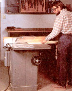
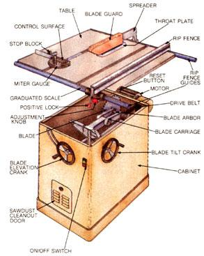
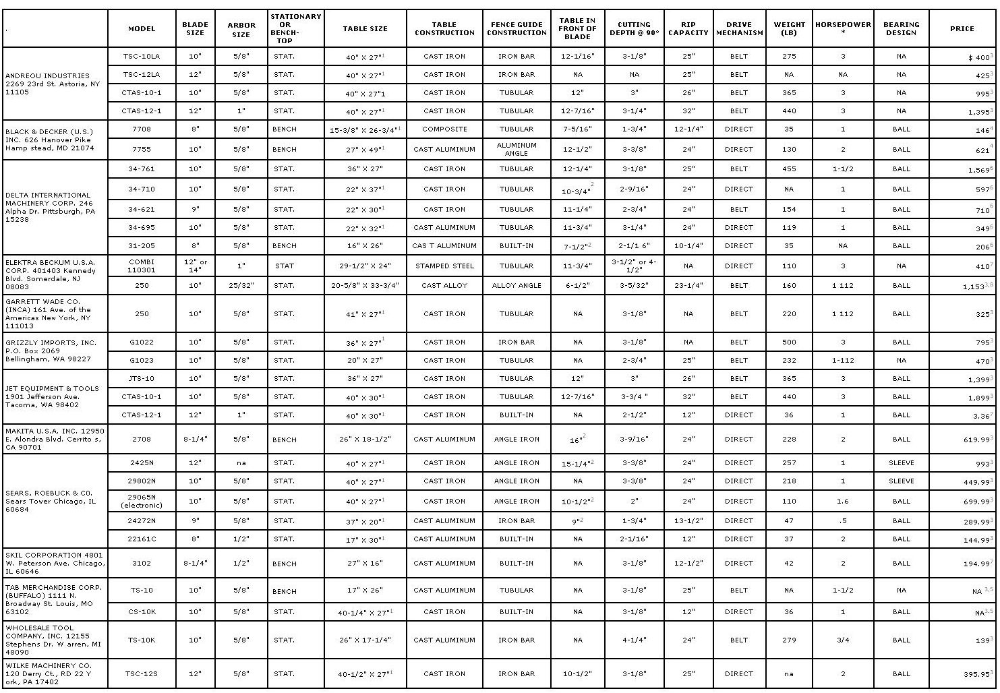

It's probably safe to say that the table saw is the flagship of any home workshop. It's the first stationary tool most people purchase and, by and large, the one that sees the most use. But not all saws are cut from the same cloth; price aside, saw construction and design can vary considerably among different manufacturers, and even pieces of equipment of the same marque may differ depending upon their intended uses.
So, understandably enough, choosing the right saw can be a confounding and intimidating task. Consequently, we've done some homework and have come up with a number of parameters that'll help you evaluate your prospective purchase in view of your needs . . . and we have also prepared a buyers' guide listing most of the saws that the popular manufacturers and importers have to offer.
All too often, the difference between what you'd like to have and what you need could double the cost of your purchase. The first question to ask yourself is what kind of work the saw will be doing. If your chores are minor fix-up or hobby jobs that won't involve large pieces of stock, consider the bench-top models. Though they have smaller blades (usually under 10"-diameter) and tables, are designed for light service, and generally aren't precision-machined, they might retail for less than half the price of a basic stationary saw. (Then again, smaller saws are not necessarily small in quality!)
If your needs are more substantial, set your sights higher . . . but consider the sheer size of the machine and its table. Will the saw fit to the shop space you have available for it? :1 good rule of thumb is to allow a working space that's 8 feet wide by 16 feet long for the tool. Less will do, but there's no point in buying a machine whose usefulness is going to be limited by its environment.
Try to match blade diameter to your work :3s well. Naturally, larger blades allow a deeper cut, but a 10" model will handle most home woodworking tasks. Keep in mind, though, that you'll be able to do small work on a large saw, but the opposite isn't always possible. Also, remember that table dimensions vary even among saws with the same size blade . . . and that the length of the rails upon which the rip fence travels determines the effective width of the table and thus the maximum ripcutting width.
Furthermore, think about the distance from the front of the table to the cutting edge of the blade when it's at full height. The greater this-distance, the better you'll be able to control your work, because the table, rather than your hands, will be supporting the load.
There are at least a half-dozen construction or mechanical considerations you ought to inv vestigate before you lay down your hardearned cash. Starting at the top, examine the quality of the table itself. Generally, it'll be made of either cast iron, cast aluminum, stamped steel, or some kind of composite. All things considered, a cast-iron platform is like 1Y the best, because it's probably machined accurately, it's less prone to damage or warpand it has enough mass to minimize vibration. On the other hand, aluminumespecially if it's been anodized-will resist rust better, and composites are both strong and inexpensive.
Next, look at the rip fence guides. Better saws have two tubular rails-one in front and one in back-that the fence locks to simultaneously. Some have a single front rail of angle or flat iron that's also accurate, while others rely upon an edge built into the tabletop. The whole idea is to keep the fence parallel with the blade. A fine-adjustment knob and a positive lock are very convenient, as is a scale built right into the rail so you don't have to measure distances from the blade itself.
Check out the miter gauge as well; it should move smoothly, without slop. A movable control surface is a nice feature, since it can be adjusted for work of various sizes . . . and a stop block on the gauge helps support the stock, too.
The blade carriage assembly just might be the most critical part of the saw, since it holds the blade to the table and governs its angle and height. Again, a cast-iron unit would be the first choice, though it comes at a price. Cast aluminum runs a close second, and stamped steel third (though the latter does have a significant cost advantage).
While we're on the subject, it'd be worth your while to double-check the method used to adjust for angle cuts. A tilting-arbor setup (in which the blade axle moves and the table stays stationary) is used almost exclusively. If you run across a saw on which the table tilts, remember that the work tilts with it and might be difficult to handle.
Closely related to the carriage assembly is the power-drive mechanism. On a motorized saw, the blade is fastened directly to the motor shaft. This method lowers manufacturing costs but puts stress on the shaft bearings, increases vibration and noise, and limits the blade elevation. A better alternative is the more expensive motor-driven design, in which one or more belts are used to drive the blade, which is mounted on a separate arbor.
Finally, pay attention to the motor type and specifications. The figure most bandied about is horsepower, which can be misleading if you don't understand how it's measured. Sometimes, manufacturers will quote peak, or developed, horsepower values, which aren't a true yardstick because they indicate power under no-load conditions. Instead, look for a rated, or continuous, horsepower figure, which is an in-use, real-world standard. As a double check, ascertain the machine's amperage rating; a 110-volt motor must draw at least 10 amps to develop 1 continuous horsepower. (On a 10-inch saw, a 1-HP motor might be too small. In general use, a power plant of 11/2 rated horsepower would be better.)
In addition to power ratings, there are a few other things to look for in a motor. Consider a 220-volt unit if you want a heavy-duty shop tool (3-phase motors are generally found on saws designed for industrial use). Determine whether its housing is drip-proof or totally enclosed . . . the latter costs more, but provides the windings with protection against sawdust and moisture. While you're at it, check to see if the motor has a reset button (and hence is overload-protected) and whether it's an induction type or a brush-equipped, serieswound (universal) model. The brushless ACinduction type maintains a fairly constant speed under load and requires min imal maintenance. Finally, compare shaft bearing construction. Bushing or sleeve bearings are inexpensive and quiet, but ball bearings function better under load.
These buyers' guidelines are not all-inclusive by any means, so your best bet is to study-and even try out-the product before you buy. Most table saws come with a blade guard, a miter gauge, a fence, and a throat plate, but dozens of accessories are also available for specific applications. And one last word to the wise: If you're unsure as to the reputation of a product, cast a critical eye over its finish quality and check the trueness of' the table with a straightedge. Also, make sure you can get replacement parts when you need them. Lack of an odd component can turn a "great buy" into a motorized mastodon.
The following is a list of manufacturers whose products are oriented more toward production than home shop or commercial use and are thus priced accordingly. We've also included the address of Gilliom Manufacturing, Inc., which supplies plans, parts, and castings for a line of kit-built woodworking tools.
Boice Crane
P.O. Box 429
Gothenburg, NE 69138
Davis & Wells
PAL Industries, Inc.
11090 South Alameda St.
Lynwood, CA 90262
Gilliom Manufacturing, Inc.
1700 Scherer Pkwy.
St. Charles, MO 63301
Hitachi Power Tools U.S.A. Ltd.
4487-F Park Dr.
Norcross, GA 30093
Griggio
Holz Machinery Corp.
45 Halladay St.
Jersey City, NJ 07304
Oliver Machinery Co.
1025 Clancy Ave. N.W.
Grand Rapids, MI 49503
Powermatic-Houdaille
Morrison Rd.
McMinnville, TN 37110
Tannewitz
B.M. Root Co.
P.O. Box 1226
York, PA 17405
Ulmia
Mahogany Masterpieces
RFD 1, Wing Rd.
Suncook, NH 03275
|
 |
 |
 |